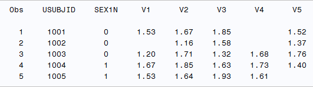
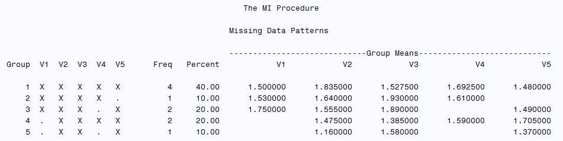
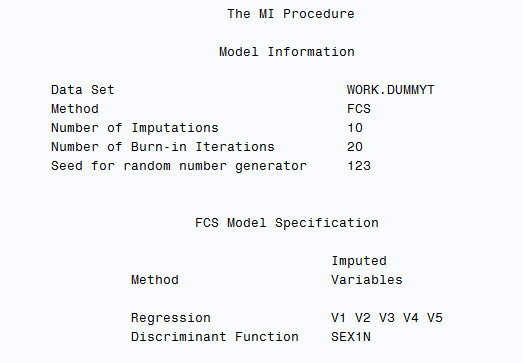
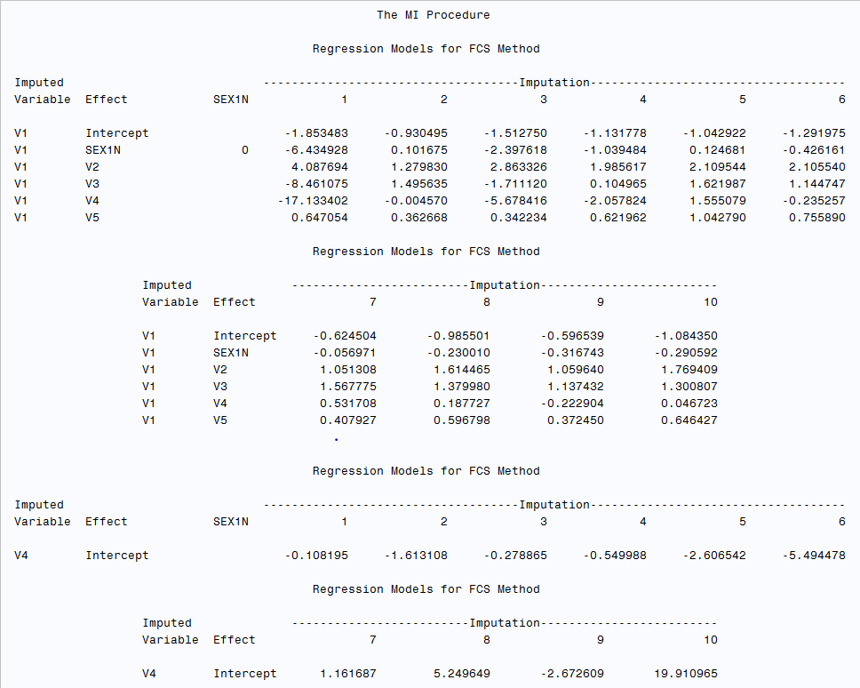
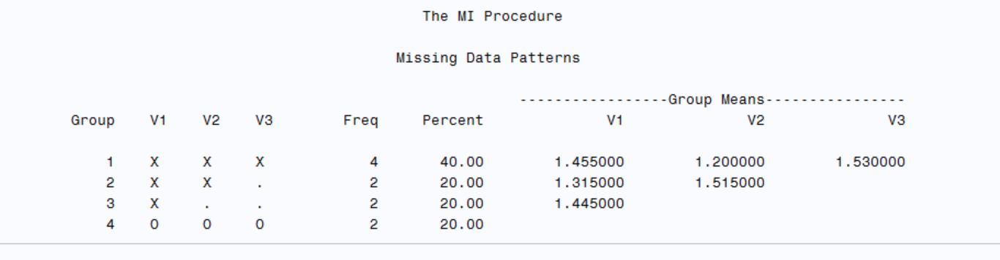

data dummy;
length USUBJID $4;
do i=1 to 10;
sex1n=int(ranuni(0)*2);
do j=1 to 5;
USUBJID=strip(put(1000+i,best.));
AVISITN=j;
AVAL=round(1+ranuni(0),0.01);
if ranuni(0) <0.1 then aval=.;
output;
end;
end;
drop i j;
run;
proc sort data=dummy; by usubjid sex1n;run;
proc transpose data=dummy out=dummyt(drop=_name_) prefix=v;
by USUBJID sex1n;
id avisitn;
var aval;
run;
proc print data=dummyt(obs=5);
run;Multiple Imputaton: Linear Regression in SAS
Input dataset preparation before multiple imputation
- Prepare a subset of the analysis dummy dataset, details as below:
USUBJID(length 4): Subject ID.SEX1N: Sex A random integer between 0 and 1 representing a binary variable (perhaps gender).AVISITN: Visit number (1 to 5 for each subject).AVAL: A random value between 1 and 2, with a random 10% chance of being missing.
As PROC MI requires a horizontal, one record per subject data set. More often than not, the data we impute will come from a vertical ADaM BDS data set. So we need to first transpose the aval with the avisitn as ID (assuming avisitn = 1 to 5),creating transposed variable v1-v5.

Check missing data patterns
The pattern can be checked using the following code, missing data pattern could be classified as “Monotone” or “Arbitrary”
“Monotone” : The missingness of data follows a specific order such that if a certain variable is missing for a particular observation, all subsequent variables are also missing for that observation. If a dataset has columns X1,X2,…,Xk a monotone missing pattern appears when: If Xj is missing, then Xj+1, Xj+2,…,Xj+3 are missing.
“Arbitrary” : The missingness of data does not follow any specific order or predictable sequence. Data can be missing at random points without a discernible pattern.
ods select MissPattern;
proc mi data=dummyt nimpute=0;
var v1 - v5;
run;As below figure shows the missingness dose not follow any specific order, obviously the missing pattern is arbitrary and non-monotone missing pattern.

FCS Regression for non-monotone missing pattern
proc mi data=dummyt out=outdata nimpute=10 seed=123;
class sex1n;
var sex1n v1 - v5;
fcs reg (v1-v5 /details);
run;- The
VARstatement above listing the variables to be analyzed, should match the statistical models for efficacy analysis per SAP, which may include TRTPN, necessary grouping variable (for eg AGEGR1/AGEGR1N), and all outcome variables coming from repeated assessments NIMPUTE: the number of imputationsSEED: the seed to begin random number generator- Note that depending on the SAS Proc MI algorithm, if there are more factors, the ordering of factors, for example SEX1N, RACE1N, may have an effect on the generation of the imputed values for the missing values, i.e., different orderings of these factors will generate different imputed values (e.g may happen in case of monotone missing pattern) from PROC MI procedure. The ordering of subjects in the dataset may also have an effect on the generation of the imputed values for the missing values.
- The
CLASSstatement specifies the classification variables in the VAR statement. FCSis displayed as the method, if not specified then MCMC will be the default method.REGis the specified model which in this example is linear regression)- The
DETAILSoption displays the regression coefficients in the regression model used in each imputation.


Monotone Regression for monotone missing pattern
Let’s update above SAS code to generate a dummy dataset with monotone missing pattern
data dummy;
length USUBJID $4;
do i=1 to 10;
sex1n=int(ranuni(0)*2);
USUBJID = strip(put(1000+i, best.));
miss_start = ceil(ranuni(0) * 5); /* Randomly decide the start point for missing data (1 to 5) */
do j=1 to 5;
AVISITN = j;
if j >= miss_start then AVAL = .; /* If the visit number is greater than or equal to miss_start, make AVAL missing */
else AVAL = round(1 + ranuni(0), 0.01);
output;
end;
end;
drop i miss_start j;
run;
proc sort data=dummy; by usubjid sex1n;run;
proc transpose data=dummy out=dummyt(drop=_name_) prefix=v;
by USUBJID sex1n;
id avisitn;
var aval;
run;
proc print data=dummyt(obs=5);
run;
ods select MissPattern;
proc mi data=dummyt nimpute=0;
var v1 - v5;
run;
In this case we will use monotone statement instead of FCS for the imputation, example code as below:
proc mi data=dummyt out=outdata nimpute=10 seed=123;
class sex1n;
var sex1n v1 - v5;
monotone reg (v1-v5 /details);
run;